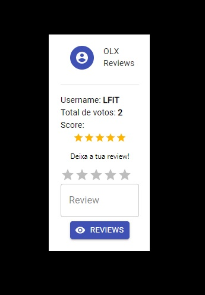
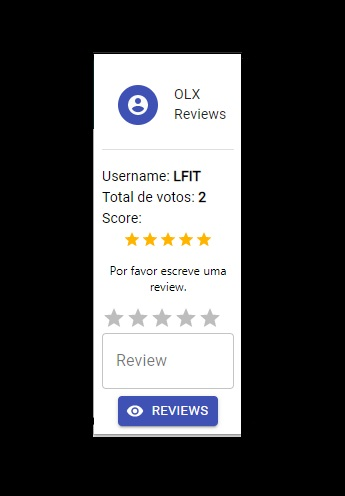
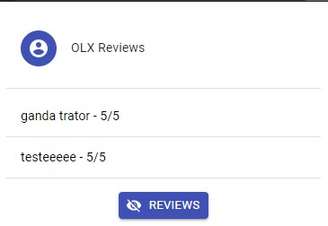

OLX Reviews - Chromium Extension
Intro
OLX is, without a doubt, the biggest online marketplace in Portugal, thousands of items are posted up for sale everyday.
People sometimes meet up in person to exchange money for the item they're buying, other times they do a wire transfer before recieving the product.
And as is custumary with any online marketplace, scammers try their best to gain a quick buck by scamming people.
This is what this extensions plans to minimize. By creating a system that rewards trustworhy practices and punishes unprofessionalism, customers will be more aware
of who they're making business with and what their past history entails.
How it works
Upon visiting a user's page, the extension icon will lit up and you'll be able to click on it.
As so:

Upon opening, you'll be greeted with user statistics, how many people have reviewed him/her and the average of said reviews.
Here, we can see that the username JtZH has been reviewed 2 times and has an average score of 4 stars.
Each IP adress can only vote once for the same user. This is to avoid spam.
To Leave a review, you write about your experience with the user and then select how many stars to rate him with.
If you try to leave a review without any text, a message will pop up:

You can also press the view reviews button and the user reviews will pop up:

Tech stack used
Frontend: React.js & Material-UI
Backend: Node.js & Express running on Heroku Cloud Environment